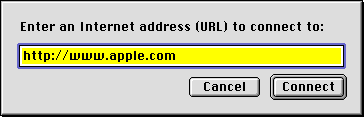

Modal Dialog Boxes
A modal dialog box puts the user in the state (or "mode") of being able to work only inside the dialog box. It temporarily suspends all other user actions in an application and forces the user to make decisions and respond to the dialog. The user cannot move or resize a modal dialog box, and the user can dismiss it only by clicking its buttons. If the user clicks any other window or on the desktop, the system beeps, but nothing else happens.Modal dialog boxes display their content on a placard-like background. Figure 3-3 shows a modal dialog box.

You should restrict your use of modal dialog boxes to occasions when your application needs the user to make a decision before operations can continue. This should be a task-specific, limited interaction that can be quickly resolved. Unless you need the extra restrictions of a non-movable modal dialog box, you should use a movable modal dialog box (page 55) whenever possible.
For more information on implementing modal dialog boxes, see "Modal Dialog Box Behaviors" in Macintosh Human Interface Guidelines.